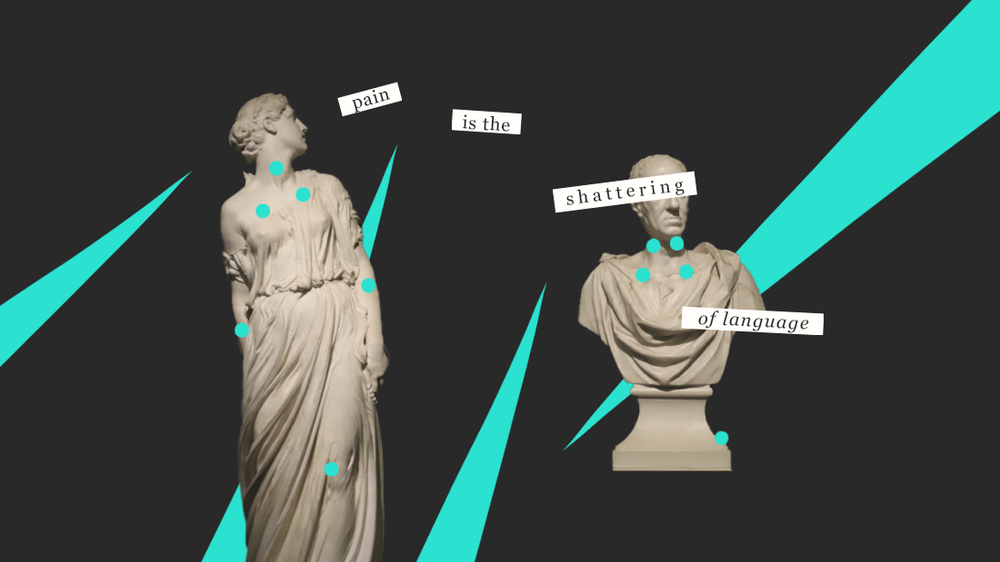

writing exploring the cultural and medical journey of pain
tags: interviews, ethnographic research, women's health, chronic pain, activism, culture
This piece was written in reflection on my pain points project.

Pain is the shattering of language.
That is what Elaine Scarry wrote in her book, The Body in Pain. According to Scarry, pain is a visceral sensation that is almost impossible to communicate: its “resistance” to language creates its “unsharability.” The violent power of pain is that it combats communication. It strips away the potential of words to bridge gaps and facilitate understanding. Pain can be approximated, alluded to, perhaps explained, but it can’t be fully conveyed. While it is possible to empathize or imagine, it is difficult to truly understand what pain someone else is going through. Not just difficult: near impossible. “To have great pain is to have certainty,” Scarry concludes. “To hear that another person has pain is to have doubt.”
Julie Woods, designer and researcher at the RISD Center for Complexity, agrees. “Pain is such a solitary experience,” she says. “There’s absolutely zero way for any human being to absolutely know with confidence the pain experience of any other human being.”
One of the projects Woods works on is in collaboration with UCSF, helping patients for whom English is not their preferred language to accurately communicate their pain to doctors. She is investigating, among other things, whether the standard American tools of the 1-10 pain scale and Wong-Baker face pain scale have cultural relevance to patients from other cultures. She is interested in whether similes, metaphors, and idioms can serve as a more useful means to facilitate this communication, allowing patients to express themselves rather than conform to a medical model.
The pain of others is not valued or perceived equitably. People in the minority, who are already less likely to be believed due to persisting biases, find it even more difficult to communicate their pain. This includes people who do not speak English as well, people who identify as queer, and people who were born female or identify as women. The same barriers of discrimination and disenfranchisement that disincentivize them to speak up in general compound the already-fraught communication of pain.
As Scarry continues: “The relative ease or difficulty with which any phenomenon can be verbally represented also influences the ease or difficulty with which that phenomenon is politically represented.” It is already hard for pain to be taken seriously: and imagine how hard it is when the person in pain is already someone with lower political power.
Women are misdiagnosed, mistreated, and misunderstood when in pain. Dianne Hoffman and Anita Tarzian’s scientific study The Girl Who Cried Pain analyzes why women report more severe, frequent, and longer-lasting pain than men, but are treated less rigorously. Female patients were more often perceived as anxious than in pain, and their pain dismissed as psychological. Women were more likely to be given sedatives... and men to be given pain medicine. It is a long journey to treatment, much less to being believed. Hoffman and Tarzian cite studies that state chilling facts: “of chronic pain patients who were referred to a specialty pain clinic, men were more likely to have been referred by a general practitioner, and women, by a specialist” and “of 188 patients treated at a pain clinic, the women were older and had experienced pain for a longer duration prior to being referred to the clinic than the men.”
During my Masters in Design Products at the Royal College of Art, I conducted a design and research project regarding chronic pain that eventually focused on women in pain. I researched and interviewed female chronic pain patients, specifically focused on those with endometriosis and fibromyalgia, in order to understand their stories and their experience in medicine. Endometriosis is a chronic condition in which the uterus lining grows outside of the uterus, causing pain during and outside of menstruation. 1 in 10 women are affected, and treatment includes surgeries but no real cure. Fibromyalgia is a condition of chronic pain fatigue that affects 1 in 20 individuals, mostly women, and has no cure.
“The problem is you can’t put pain on trial,” writes fibromyalgia patient Amy Berkowitz in her book Tender Points. The title of the book refers to the way that fibromyalgia is diagnosed: a doctor presses on 18 tender points throughout the body, and if the patient feels pain in 11 of them, this leads to a diagnosis. Of course, this testimony-and-trust-based diagnosis depends on whether the doctor believes that the patient is truly feeling pain when they say they do. An almost imprecise measurement to a condition that already has murky roots of cause. (Some theorize it is triggered by past trauma, but there is no documentation of what exactly is the onset.)
Hoffman and Tarzian summarize that women were frequently thought to be equipped with a “natural capacity to endure pain.” There is a societal normalization of pain for women – period pain is simply expected every month – and an expectation that women simply have to just deal with it. This can partially explain why, according to the NHS (the United Kingdom’s National Health Service), endometriosis takes an average of 7.5 years to diagnose.
For one endometriosis patient I interviewed, Belen, the diagnostic process took six painful years and four doctors before she had an accurate diagnosis. Her own father was one of the doctors who did not initially believe her pain was “real” when she came to him for help.
“I cried from joy when I first got that diagnosis,” confesses Belen. “Finally I could call that pain something. It wasn’t just my imagination. I could actually call it, label it, and say yes, it exists. Because for many years, I wouldn’t believe my own pain.” Belen said the interview itself was cathartic: simply getting the chance to tell her story from beginning to end, to a sympathetic listener, was an experience she had never had before.
Of course, a diagnosis isn’t the end of the pain journey. A way to label the condition brings forth hope, community, and understanding, but doesn’t magically erase the condition. For many chronic pain patients, the reality is less so treatment and more so a lifetime of pain management. Instead of having real solutions for these painful medical conditions, often, patients are given pills as quick fixes. Endometriosis patients get prescribed birth control pills, and fibromyalgia patients get prescribed antidepressant pills. Both of these pills come with a whole host of “side effects.” These “side” effects that are really just effects – that may only make the pain worse, or shift into a different type of pain entirely. The NHS website lists 13 “standard” effects for the antidepressant pills and 12 “serious” effects for it, which include, ironically, thoughts for suicide. For the various birth control pills, the website lists 14 “standard” effects and 12 “serious” ones, which include, also ironically, vaginal pain and bleeding.
The “side” effects of these pills include the very symptoms for which they are meant to treat.
No small wonder why many chronic pain patients often turn to alternative types of medicine, such as acupuncture, yoga, and mindful meditation. “It helps you to be in touch with your own body,” explains Linda, an acupuncturist who treats many chronic pain patients. “If you’re in a still room and you’re being pulled in every direction, it helps to ground you.” Yet these forms of treatment aren’t counted by most Western measures, and patients have to pay out of pocket for them.
Problems at every turn: pain is not believed, a description of pain doesn’t always lead to diagnosis, diagnosis doesn’t always lead to solutions, and solutions don’t always lead to change. Often, chronic pain patients have to live with worsening conditions for the rest of their lives. More than often, these patients are women or other minorities.
Who is to blame here? It is not that doctors and nurses are callous and do not care about their patients. It is unlikely that medical professionals join their profession without empathy for humankind and the desire to truly help. However, with fifteen minutes or less to see and diagnose a patient, and burnout and dropout a key problem for medical professionals – especially post-pandemic – it is likely that facts, not feelings, are brought to the forefront. There is a gap between the way that patients express themselves, in anecdotes and sensations, and in the way that doctors need to codify conditions, in medical terminology (and, in the United States, in insurance codes). In addition, this so-called “factual” terminology can be biased. Medical textbooks disproportionately feature male anatomy and male conditions. The system is not designed with half of the population in mind. Half, therefore, is left unserved.
The design that came out of this research, pain points, used rope as a way to visualize pain that is usually chronic and invisible. Taking a subset of the words from the McGill Pain Questionnaire, a toolkit of cards was created, aimed to help patients communicate their pain to medical professionals. The project explored how to deliver agency back in the hands of women as experts on their own personal medicine by equipping them with a toolkit and vocabulary to communicate their often unacknowledged pain.
While doctors are the experts in medicine, patients are the experts in their own personal medicine. They know their medical histories: what works for them and what doesn’t. The ideal interaction should not be a one-sided information flow but rather a two-sided information exchange, where patient and doctor collaborate to achieve the best possible outcome. Patients should be able to regain agency of their health and wellbeing. After all, we only get one body.
In the breakneck way that most practices are conducted, this ideal of patients being able to bring the vocabulary cards and toolkit into a consultation and communicate with them often cannot be realized. However, there is still opportunity for the cards to slot into patient lives: at home where they can explore their pain at their own leisure, in the waiting rooms where they can take the chance to prepare for the conversation, and at pain clinics where chronic pain patients are dedicated to longer amounts of time with dedicated pain professionals. This doesn’t fully solve all the problems listed when it comes to the burden – and burden of proof – of chronic pain, but it is one tender step.
Since exhibiting pain points, my patient advocacy journey brought me to The Patient Revolution. Founded by Dr. Victor Montori, it is a global community of “care activists” that consist of medical professionals, researchers, designers, patients, and advocates who are “dedicated to transforming healthcare from an industrial activity into a deeply human one.” I took the course offered and eventually became a Fellow. The community encourages its members to participate in mini-revolutions to enact change against a very industrial medical system, making it more humane and kind. That mini-revolution can be as simple as going to your doctor and pushing for a more equal, two-way conversation, slowly changing that paradigm one conversation at a time. Or: it can be as simple as taking a stand to better understand your own body.
“You are the only one that can understand your body,” Belen reflects. “So next time you go to the doctor, they can tell you things, but you first need to understand your own body.”
Too often, this issue is ignored or brushed aside. We need to change the way that all patients – not only minorities, not only the chronically underserved, not only those with chronic pain – are treated; these population groups feel that even more deeply. That change can start with giving every patient more agency in the wider system.
Let’s press on the pain points. Let’s see them, hear them, feel them.